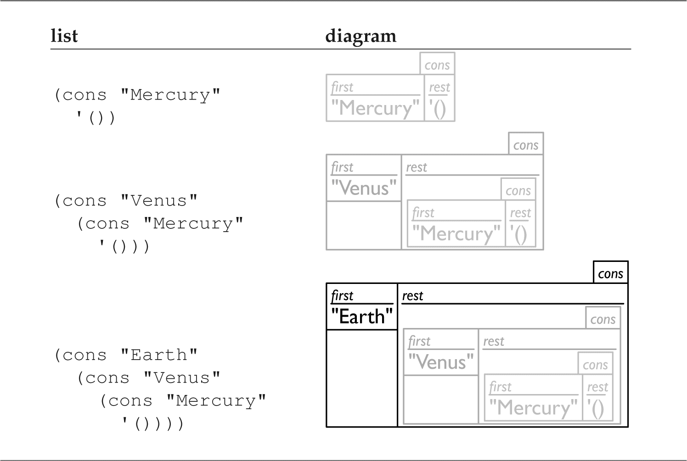
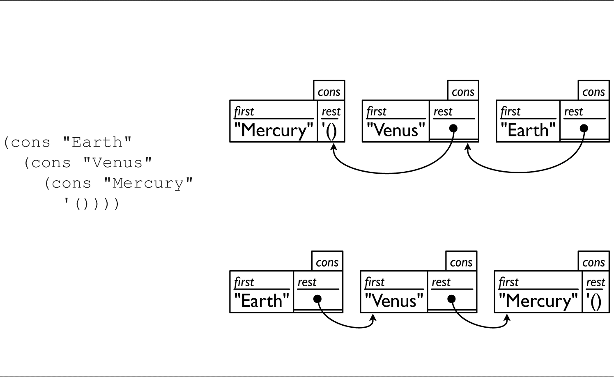
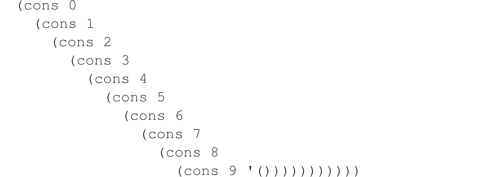
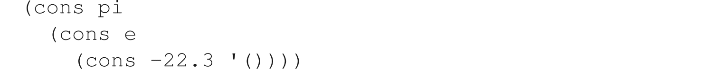
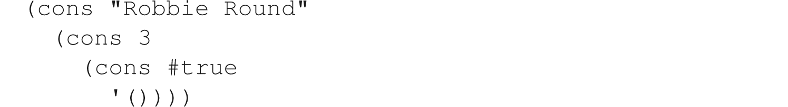

8.1 Creating Lists
All of us make lists all the time. Before we go grocery shopping, we write down a list of items we wish to purchase. Some people write down a to-do list every morning. During December, many children prepare Christmas wish lists. To plan a party, we make a list of invitees. Arranging information in the form of lists is an ubiquitous part of our life.
Given that information comes in the shape of lists, we must clearly learn how to represent such lists as BSL data. Indeed, because lists are so important, BSL comes with built-in support for creating and manipulating lists, similar to the support for Cartesian points (posn). In contrast to points, the data definition for lists is always left to you. But first things first. We start with the creation of lists.
When we form a list, we always start out with the empty list. In BSL, we represent the empty list with
'()
which is pronounced “empty,” short for “empty list.” Like #true or 5, '() is just a constant. When we add something to a list, we construct another list; in BSL, the cons operation serves this purpose. For example,
(cons "Mercury" '())
constructs a list from the '() list and the string "Mercury". Figure 44 presents this list in the same pictorial manner we used for structures. The box for cons has two fields: first and rest. In this specific example the first field contains "Mercury" and the rest field contains '().

Figure 44: Building a list
Once we have a list with one item in it, we can construct lists with two items by using cons again. Here is one:
(cons "Venus" (cons "Mercury" '()))
And here is another:
(cons "Earth" (cons "Mercury" '()))
The middle row of figure 44 shows how you can imagine lists that contain two items. It is also a box of two fields, but this time the rest field contains a box. Indeed, it contains the box from the top row of the same figure.
Finally, we construct a list with three items:
(cons "Earth" (cons "Venus" (cons "Mercury" '())))
The last row of figure 44 illustrates the list with three items. Its rest field contains a box that contains a box again. So, as we create lists we put boxes into boxes into boxes, and so on. While this may appear strange at first glance, it is just like a set of Chinese gift boxes or a set of nested drinking cups, which we sometimes get for birthdays. The only difference is that BSL programs can nest lists much deeper than any artist could nest physical boxes.
Because even good artists would have problems with drawing deeply nested structures, computer scientists resort to box-and-arrow diagrams instead. Figure 45 illustrates how to rearrange the last row of figure 44. Each cons structure becomes a separate box. If the rest field is too complex to be drawn inside of the box, we draw a bullet instead and a line with an arrow to the box that it contains. Depending on how the boxes are arranged, you get two kinds of diagrams. The first, displayed in the top row of figure 45, lists the boxes in the order in which they are created. The second, displayed in the bottom row, lists the boxes in the order in which they are consed together. Hence the second diagram immediately tells you what first would have produced when applied to the list, no matter how long the list is. For this reason, programmers prefer the second arrangement.

Figure 45: Drawing a list
Exercise 129. Create BSL lists that represent
1. a list of celestial bodies, say, at least all the planets in our solar system;
2. a list of items for a meal, for example, steak, french fries, beans, bread, water, Brie cheese, and ice cream; and
3. a list of colors.
Sketch some box representations of these lists, similar to those in figures 44 and 45. Which of the sketches do you like better? 
You can also make lists of numbers. Here is a list with the 10 digits:

To build this list requires 10 list constructions and one '(). For a list of three arbitrary numbers, for example,

we need three conses.
In general a list does not have to contain values of one kind, but may contain arbitrary values:

The first item of this list is a string, the second one is a number, and the last one a Boolean. You may consider this list as the representation of a personnel record with three pieces of data: the name of the employee, the number of years spent at the company, and whether the employee has health insurance through the company. Or, you could think of it as representing a virtual player in some game. Without a data definition, you just can’t know what data is all about.
Then again, if this list is supposed to represent a record with a fixed number of pieces, use a structure type instead.
Here is a first data definition that involves cons:
; A 3LON is a list of three numbers:
; (cons Number (cons Number (cons Number '())))
; interpretation a point in 3-dimensional space
Of course, this data definition uses cons like others use constructors for structure instances, and in a sense, cons is just a special constructor. What this data definition fails to demonstrate is how to form lists of arbitrary length: lists that contain nothing, one item, two items, ten items, or perhaps 1,438,901 items.
So let’s try again:
; A List-of-names is one of:
; -- '()
; -- (cons String List-of-names)
; interpretation a list of invitees, by last name
Take a deep breath, read it again. This data definition is one of the most unusual definitions you have ever encountered—you have never before seen a definition that refers to itself. It isn’t even clear whether it makes sense. After all, if you had told your English teacher that “a table is a table” defines the word “table,” the most likely response would have been “Nonsense!” because a self-referential definition doesn’t explain what a word means.
In computer science and in programming, though, self-referential definitions play a central role, and with some care, such definitions actually do make sense. Here “making sense” means that we can use the data definition for what it is intended for, namely, to generate examples of data that belong to the class that is being defined or to check whether some given piece of data belongs to the defined class of data. From this perspective, the definition of List-of-names makes complete sense. At a minimum, we can generate '() as one example, using the first clause in the itemization. Given '() as an element of List-of-names, it is easy to make a second one:
(cons "Findler" '())
Here we are using a String and the only list from List-of-names to generate a piece of data according to the second clause in the itemization. With the same rule, we can generate many more lists of this kind:
(cons "Flatt" '())
(cons "Felleisen" '())
(cons "Krishnamurthi" '())
And while these lists all contain one name (represented as a String), it is actually possible to use the second line of the data definition to create lists with more names in them:
(cons "Felleisen" (cons "Findler" '()))
This piece of data belongs to List-of-names because "Felleisen" is a String and (cons "Findler" '()) is a confirmed List-of-names.
Exercise 130. Create an element of List-of-names that contains five Strings. Sketch a box representation of the list similar to those found in figure 44.
Explain why
(cons "1" (cons "2" '()))
is an element of List-of-names and why (cons 2 '()) isn’t.
Exercise 131. Provide a data definition for representing lists of Boolean values. The class contains all arbitrarily long lists of Booleans.